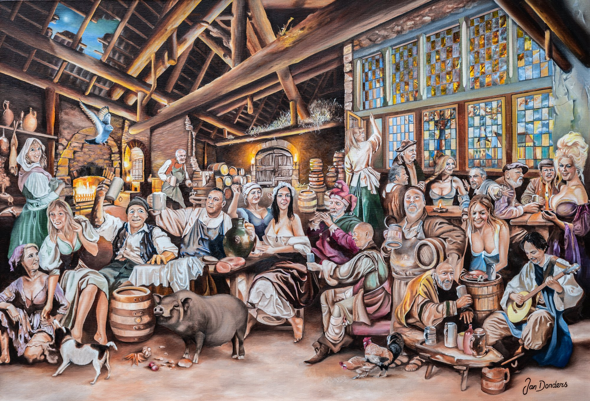
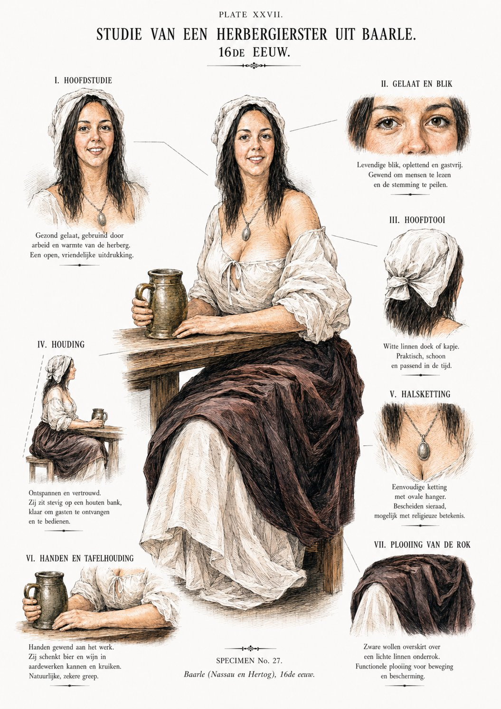
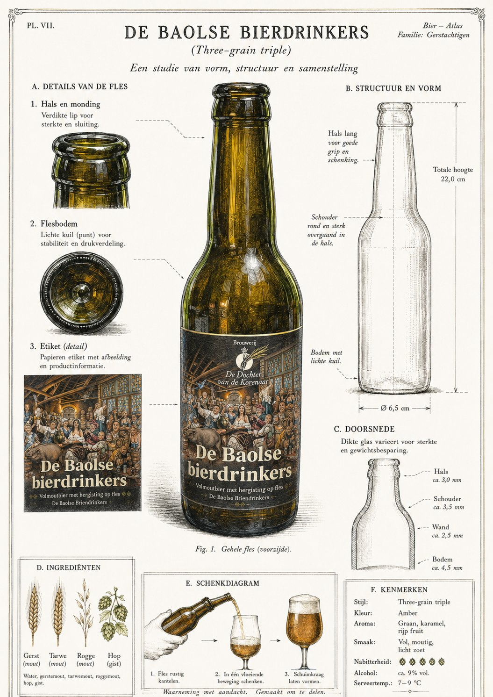

Het schilderij
Tweeëntwintig figuren rond de schenktafel van een herberg op Loveren. Brood wordt gebroken, kip gekluifd, bier gedronken. Door het glas-in-loodraam achterin is de Belgische kerk zichtbaar.

De Baolse Bierdrinkers in de herberg van Loveren in de 17e eeuw, acryl op doek, Jan Donders, voltooid 2026.
In 2022 begon Jan Donders aan de voorstudies. Vier jaar werk, ruim honderd herbergtaferelen bestudeerd vóór de eerste penseelstreek, ruim vier uur per gezicht. Op 1 mei 2026 werd het doek onthuld in de Remigiuskerk in Baarle-Hertog, bij de opening van de eerste Grensloze Kunstroute — door de burgemeester van Baarle-Nassau, mw. Marjon de Hoon-Veelenturf, en de burgemeester van Baarle-Hertog, dhr. Philip Loots.
Niet in de schaduw van de grote meesters te kunnen staan, maar ik heb een poging gedaan… Jan Donders, bij de onthulling, 1 mei 2026
Het verhaal achter het schilderij
In de 17e eeuw, anno 1648, eindigt de Spaanse bezetting en wordt de Vrede van Münster gesloten. De handelswegen tussen steden als Antwerpen, Turnhout, Breda, Tilburg en Utrecht worden hierdoor geïntensiveerd. Deze Heerdgangen resulteren in driehoekige pleintjes. In Baerle — toen nog met ae — was dit de driehoek nu bekend als Loveren.
Hier ontstond de eerste herberg van Baerle, welbekend onder de naam Herberg De Swaen. Bezoekers van deze herberg waren veelal de handelsreizigers, de boeren uit de omgeving en de dames van plezier. Het bier werd aangeleverd door de boeren uit de omgeving, gebrouwen achter in de schuur.
Het schilderij De Baolse Bierdrinkers is een tafereel uit deze tijd, met een moderne touch van de 21e eeuw. Inmiddels is het typische Baarlese bier ook weer verkrijgbaar in de Baarlese horeca en draagt ook de naam De Baolse Bierdrinkers.
De figuranten
Alle tweeëntwintig gezichten in het schilderij zijn naar levend model geschilderd. Geen verzonnen koppen, maar bewoners van Baarle en omstreken — vrienden, bekenden, dorpsgenoten.
Op vrijdag 6 februari 2026 nodigde Jan zijn modellen uit in Café 't Pleintje voor een zeventiende-eeuws, bourgondisch feest. Zijn gasten kwamen in passende kleding. Een fotograaf legde iedereen vast in precies dezelfde houding als op het schilderij — "Het moet wel kloppen," aldus Jan. Ondertussen werd er brood gebroken, kip gekluifd en bier gedronken. Ook wethouder Janneke van de Laak was aanwezig.

— lijst met alle tweeëntwintig figuranten en hun rol in het tafereel volgt —
Het bier
Een schilderij over bierdrinkers vraagt om een bier. Brouwerij De Dochter van de Korenaar uit Baarle-Hertog brouwde het — een three-grain triple van gerst, tarwe en rogge. Een volmoutbier met hergisting op fles, gedocumenteerd in twee atlas-platen.

Kenmerken
| Type | Three-grain triple |
|---|---|
| Granen | Gerstemout, tarwemout, roggemout |
| Kleur | Amber |
| Alcohol | ca. 9 % vol. |
| Inhoud | 33 cl |
| Serveertemp. | 7 – 9 °C |
| Brouwerij | De Dochter van de Korenaar Baarle-Hertog, België |
Waar te vinden
In een aantal cafés en restaurants in en rond Baarle hangt een reproductie van het schilderij aan de muur. In sommige daarvan kunt u er het bier bij drinken. Hieronder een overzicht.
◆ = reproductie van het schilderij aanwezig
Baarle-Nassau · Nederland
-
Café 't PleintjeBier + reproductie
-
Eeterij LambikBier + reproductie
-
Café De PompBier + reproductie
Baarle-Hertog · België
-
Brouwerij De Dochter van de KorenaarBrouwerij & proeflokaal
-
[ café / restaurant ]Alleen bier
Ulicoten & omgeving
-
[ café ]Bier + reproductie
Horeca-uitbater? Bent u geïnteresseerd in een reproductie van het schilderij voor uw zaak? Neem contact op.